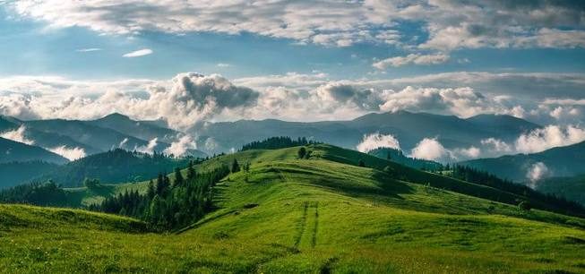
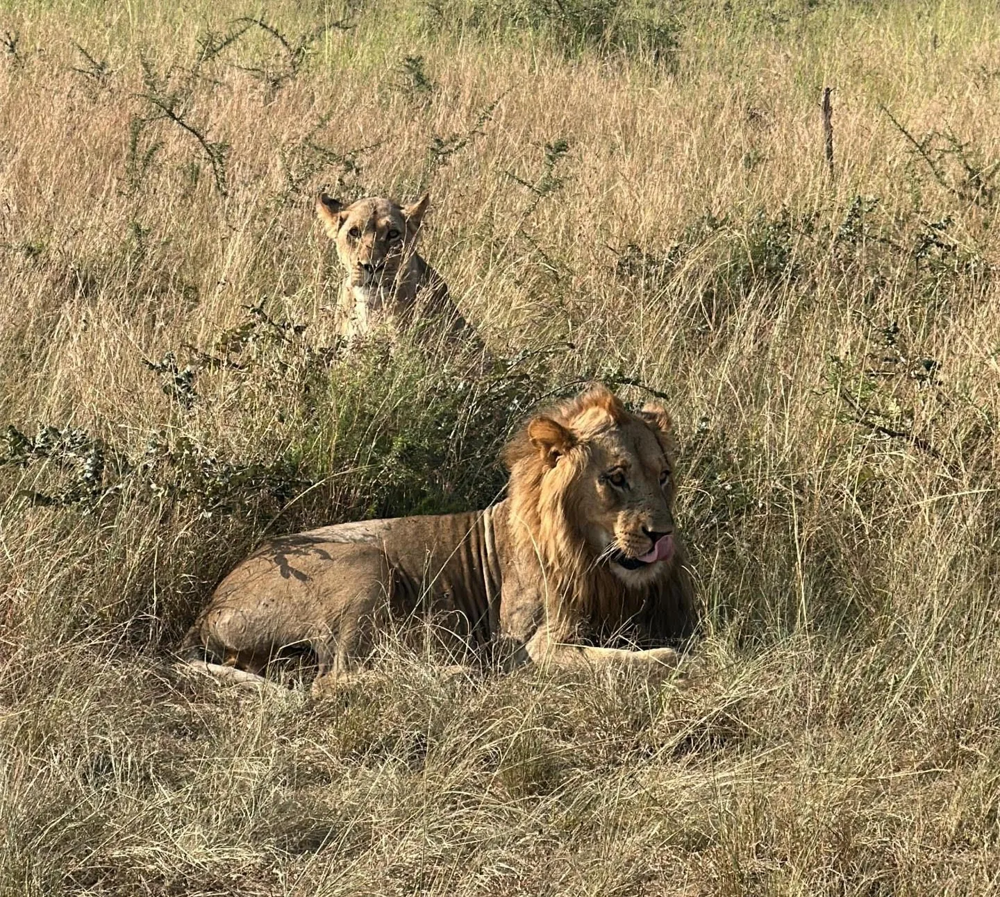
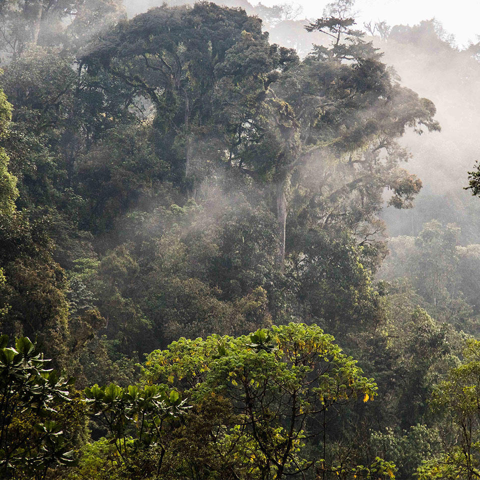

Understanding Earth's Ecosystems

Major Terrestrial Biomes
Nature thrives on interconnectedness. From the deepest ocean trenches to the highest mountain peaks
Living organisms interact with their non-living environments to create complex, self-sustaining systems.

From the deepest ocean trenches to the highest mountain peaks, which in turn defines the entire local food web.
Terrestrial biomes are massive ecological communities shaped by regional patterns of temperature and precipitation. These climate factors dictate the dominant plant life.

Tropical Rainforests
Warm and wet year-round, Hosts over half of the world's plant and animal species
Temperate Forests
- Four distinct seasons with moderate rainfall.
- Dense canopy layers that block out sunlight from the forest floor
- Dominated by deciduous trees (oak, maple, beech) that shed leaves annually.
- Arid with extreme temperature fluctuations between day and night.
Interested? Then find outEcosystem informaton